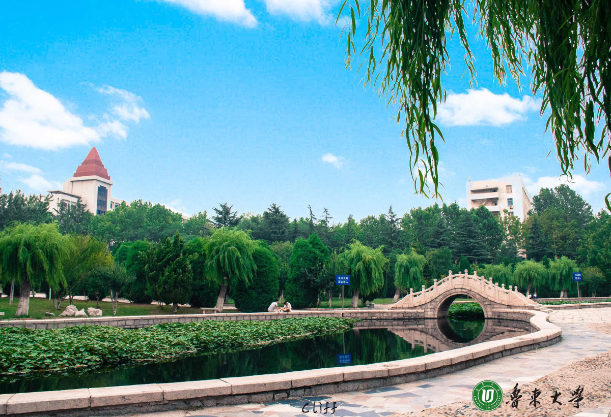

春日的校园，是一幅被春风晕开的水墨长卷，藏着数不尽的温柔与生机。清晨的薄雾还未散尽，微凉的春风裹挟着草木的清香扑面而来，阳光便透过香樟树繁茂的枝叶，在青灰色的石板路上洒下细碎的金斑，随风轻轻晃动。沿着湖畔的木质步道缓缓前行，平静的湖面如打磨光滑的明镜，清晰倒映着岸边抽芽的垂柳、粉白相间的早樱，还有远处错落的教学楼，风轻轻拂过，湖面便漾开一圈圈温柔的涟漪，偶尔有锦鲤摆尾游过，搅碎满湖春光。草坪上，不知名的小野花星星点点地绽放，嫩黄、浅紫、雪白交织在一起，像是春姑娘随手撒下的彩色颜料，点缀在嫩绿的青草间。图书馆前的玉兰花早已缀满枝头，洁白的花瓣温润如玉，在阳光下泛着柔和的光泽，风过处，花瓣簌簌落下，铺成一条香氛满溢的花径，连路过的学子都忍不住放慢脚步。午后的阳光褪去了清晨的微凉，变得格外温柔，坐在湖畔的长椅上，看天上云卷云舒，听林间鸟鸣虫吟，连空气里都弥漫着青草与花香的清甜，让人满心欢喜。
校园的春，不止有繁花似锦的浪漫，更有草木拔节生长的蓬勃力量。操场边的梧桐树，彻底褪去了冬日的萧瑟与枯黄，抽出嫩绿色的新叶，一片片在春风里舒展着腰肢，渐渐织就一片绿荫。实验楼后的竹林愈发青翠挺拔，春雨淅淅沥沥落下后，鲜嫩的笋芽儿便破土而出，裹着褐色的笋衣，带着一往无前的生命力，向着天空奋力生长。就连墙角不起眼的青苔，也在春雨的滋润下变得愈发鲜绿，顺着砖石蔓延，为校园的角落添上一抹生机盎然的底色。春风拂过校园的每一个角落，教室里传来朗朗的读书声，操场上有学子奔跑的身影，青春的朝气与自然的生机完美交融。春日的校园，是万物复苏的美好，是青春洋溢的鲜活，是自然诗意与人文气息的共生，每一处风景都在诉说着春天的美好，每一寸土地都蕴藏着向上的力量。
